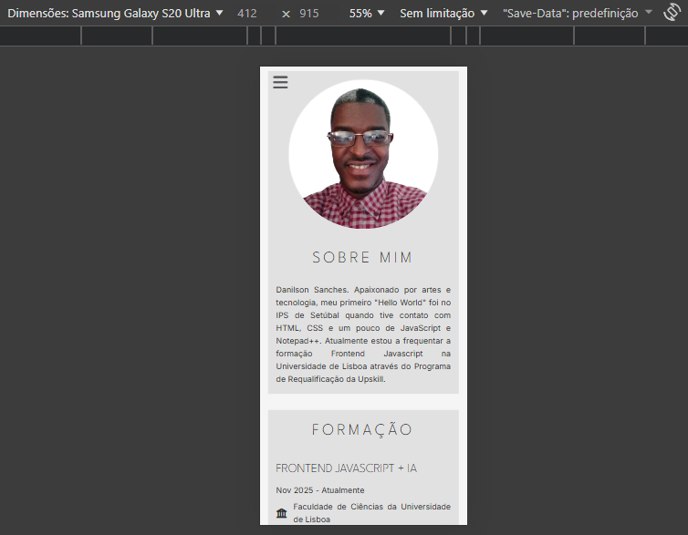
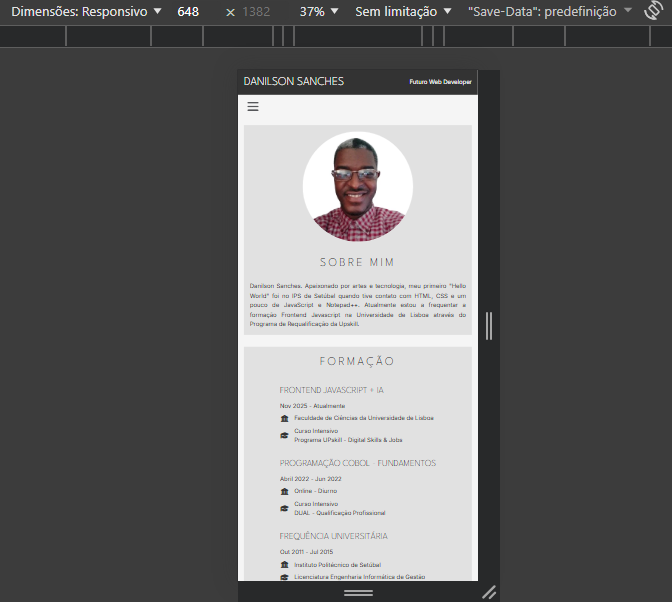
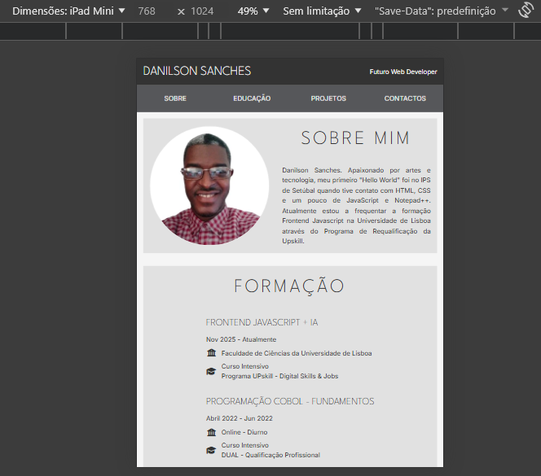
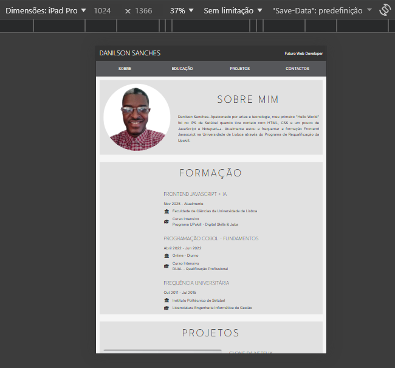
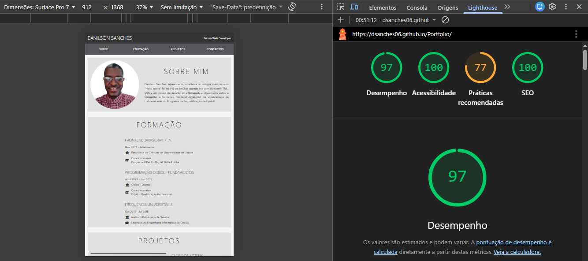
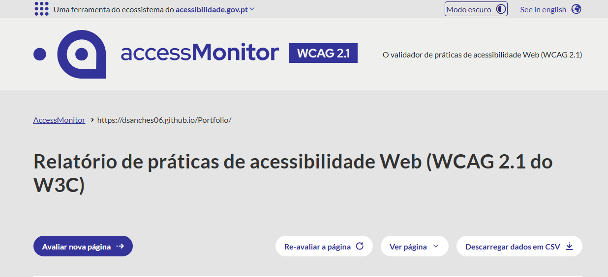
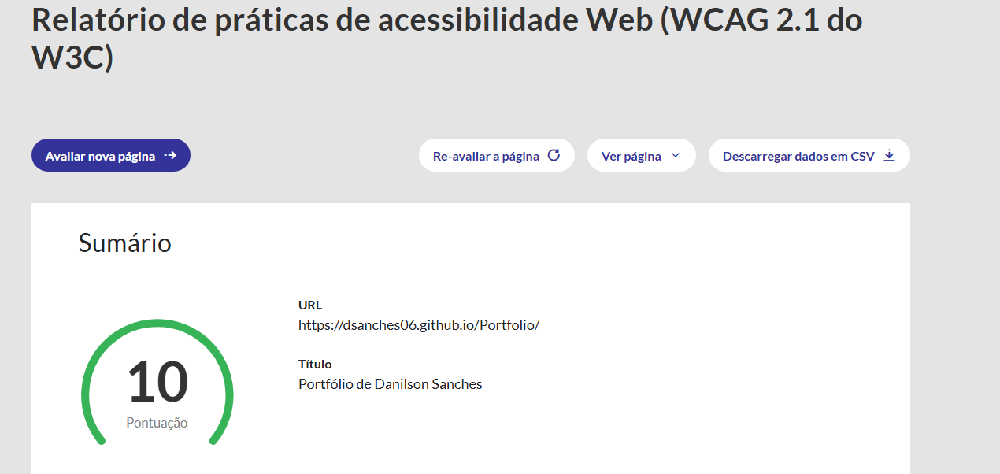
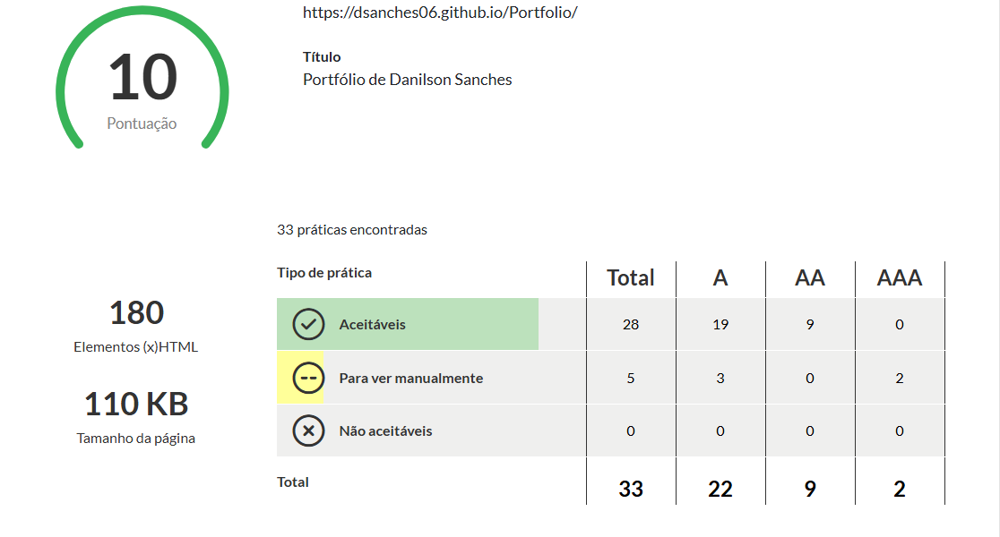

Portfólio — Apresentação
Frontend Developer (UpSkill)
Nome: Danilson Sanches
Numero: upskill217
Formação: Frontend Javascript + IA (UPskill - Universidade de Lisboa)
Demonstrar competências em desenvolvimento web frontend, com foco em interfaces responsivas, acessíveis e performance otimizada.
Design moderno e minimalista: paleta de alto contraste, tipografia legível e espaçamento generoso para melhor leitura. Interface focada no conteúdo e na usabilidade.
1. Paleta: alto contraste (ex.: #1a1a1a sobre #ffffff).
:root {
--text-primary: #1a1a1a; /* 19:1 contraste */
--bg-primary: #ffffff;
--text-secondary: #334155;
--bg-secondary: #f1f5f9;
}
body { color: var(--text-primary); background: var(--bg-primary); }2. Tipografia: Poppins (corpo) e Fira Code (técnico).
@import url('https://fonts.googleapis.com/css2?family=Poppins:wght@400;600;800');
@import url('https://fonts.googleapis.com/css2?family=Fira+Code:wght@400;500');
body { font-family: 'Poppins', sans-serif; }
code, pre { font-family: 'Fira Code', monospace; }3. Responsividade: mobile-first com breakpoints em 768px+.
/* Mobile (base) */
.container { padding: 1rem; font-size: 1rem; }
/* Tablet+ */
@media (min-width: 768px) {
.container { padding: 2rem; max-width: 1200px; }
}Modo de navegação completo implementado para todos os utilizadores:
1. Mouse (Desktop): Menu horizontal, links internos e botões funcionam com clique.
<nav>
<a href="#sobre" onclick="scrollTo('#sobre')">Sobre</a>
<a href="#projetos">Projetos</a>
</nav>2. Teclado: Tab/Shift+Tab navegam; Enter ativa; ESC fecha menus.
document.addEventListener('keydown', (e) => {
if (e.key === 'Enter') linkActive();
if (e.key === 'Escape') closeMenu();
});3. Mobile (Sidebar): Menu hambúrguer com overlay e gestão de foco.
<button class="menu-btn" aria-controls="sidebar">☰</button>
<div id="sidebar" class="sidebar" style="left: -100%;">...</div>
/* CSS: transição suave */
.sidebar { transition: left 0.3s ease; }4. Leitores de tela: Landmarks ARIA e labels descritivos.
<header><nav aria-label="Menu principal">...</nav></header>
<main>
<section aria-labelledby="sec-sobre"><h2 id="sec-sobre">Sobre</h2></section>
</main>
<footer>...</footer>Como adaptar a diferentes formatos de ecrã e como testar:
Layout Base (Mobile-First):
/* Mobile-first: single-column layout */
/* Sem media queries, aplicado a todos os tamanhos */
.container {
padding: 1rem;
max-width: 100%;
margin: 0 auto;
}
.projects__container {
display: flex;
flex-direction: column;
gap: 1.5rem;
}
.project__card {
width: 100%;
padding: 1rem;
border: 1px solid #ddd;
border-radius: 8px;
}
.menu {
position: fixed;
left: -100%;
top: 0;
width: 220px;
height: 100vh;
transition: left 0.3s ease;
background: #333;
}
/* Botão menu visível no mobile */
.menu-toggle {
display: block;
background: none;
border: none;
font-size: 1.5rem;
cursor: pointer;
}A partir de 768px (Tablet):
@media (min-width: 768px) {
/* Menu horizontal visível */
.menu {
position: static;
display: flex;
width: auto;
height: auto;
background: transparent;
flex-direction: row;
gap: 1rem;
}
/* Botão menu escondido no tablet+ */
.menu-toggle {
display: none;
}
.container {
max-width: 768px;
}
/* Grid com 2 colunas */
.projects__container {
display: grid;
grid-template-columns: repeat(2, 1fr);
gap: 2rem;
}
.project__card {
padding: 1.5rem;
}
}A partir de 1024px (Desktop):
@media (min-width: 1024px) {
.main {
max-width: 1200px;
margin: 0 auto;
padding: 3rem 2rem;
}
.container {
max-width: 1200px;
padding: 2rem;
}
/* Grid com 3 colunas */
.projects__container {
grid-template-columns: repeat(3, 1fr);
gap: 2.5rem;
}
.project__card {
padding: 2rem;
transition: 0.3s;
}
.project__card:hover {
transform: translateY(-4px);
box-shadow: 0 8px 16px rgba(0, 0, 0, 0.1);
}
/* Layout flexível para seções */
.about__content {
display: flex;
flex-direction: row;
gap: 3rem;
align-items: center;
}
}Exemplo de imagem otimizada para mobile:

Exemplo de imagem otimizada para mobile:

Exemplo de imagem otimizada para tablet:

Exemplo de imagem otimizada para desktop:

1. Touch Targets: Botões e links com tamanho ≥44x44px
.btn, .link {
min-width: 44px;
min-height: 44px;
padding: 0.75rem 1rem;
display: flex;
align-items: center;
}2. Viewport & Zoom: Meta tag essencial
<meta name="viewport"
content="width=device-width, initial-scale=1.0">3. Espaçamento (Gap): Evita seleção acidental
.menu {
display: flex;
flex-direction: column;
gap: 0.75rem; /* Espaço entre itens */
}4. Tipografia Mobile: Tamanho e contraste
body {
font-size: 16px; /* Evita zoom em inputs */
line-height: 1.6;
color: #1a1a1a; /* 19:1 contraste */
background: #ffffff;
}5. Sidebar Menu (Mobile): Desliza da esquerda
.sidebar {
position: fixed;
left: -100%;
top: 0;
width: 220px;
height: 100vh;
transition: left 0.3s ease;
z-index: 100;
}
.sidebar.open { left: 0; }Procedimentos rápidos: abrir DevTools (F12) → Device Toolbar → redimensionar; verificar overflow e touch targets (≥44×44px).

Implementação baseada em padrão checkbox/toggle com controlo por JavaScript para acessibilidade:
Estrutura Acessível com ARIA:
<!-- Botão de Menu -->
<button
id="menuBtn"
class="menu-toggle"
aria-expanded="false"
aria-controls="sidebar"
aria-label="Abrir menu de navegação">
<i class="fa-solid fa-bars"></i>
</button>
<!-- Overlay para fechar ao clicar -->
<div id="overlay" class="overlay"></div>
<!-- Sidebar menu -->
<nav
id="sidebar"
class="sidebar"
role="navigation"
aria-label="Menu principal"
aria-hidden="true">
<ul>
<li><a href="#sobre">Sobre</a></li>
<li><a href="#projetos">Projetos</a></li>
<li><a href="#contacto">Contacto</a></li>
</ul>
</nav>
<!-- ARIA Attributes -->
<!-- aria-expanded: indica se menu está aberto/fechado -->
<!-- aria-controls: liga botão ao elemento que controla -->
<!-- aria-hidden: esconde do leitor de tela -->
<!-- role="navigation": identifica nav -->Sidebar Deslizante com Transições:
/* Botão Menu */
.menu-toggle {
background: none;
border: none;
font-size: 1.5rem;
cursor: pointer;
min-width: 44px;
min-height: 44px;
}
/* Sidebar - escondido por padrão */
.sidebar {
position: fixed;
left: -100%;
top: 0;
width: 220px;
height: 100vh;
background: #333;
padding: 1rem;
transition: left 0.3s ease;
z-index: 100;
overflow-y: auto;
}
/* Quando aberto */
.sidebar.open {
left: 0;
}
/* Overlay - semitransparente */
.overlay {
position: fixed;
inset: 0;
background: rgba(0, 0, 0, 0.5);
display: none;
z-index: 99;
}
/* Overlay visível quando menu aberto */
.overlay.open {
display: block;
}
/* Links do menu */
.sidebar a {
display: block;
padding: 0.75rem;
color: white;
text-decoration: none;
transition: 0.2s;
}
.sidebar a:hover, .sidebar a:focus {
background: #555;
}Imagens do portfólio por largura (exemplos):
<!-- HTML Semântico -->
<a href="#sobre" class="nav-link">Sobre</a>
<button type="button" class="btn">Enviar</button>
<!-- CSS: Focus Visível e Hover -->
a, button {
transition: 0.2s ease;
}
a:focus, button:focus {
outline: 3px solid #2563eb;
outline-offset: 2px;
}
a:hover { text-decoration: underline; }
button:hover { background: #1d4ed8; }
<!-- JS: Enter também funciona -->
button.addEventListener('keydown', (e) => {
if (e.key === 'Enter') {
button.click();
}
});Validação HTML5 + Mensagens JS Customizadas:
<!-- HTML com validação -->
<form id="contactForm" novalidate>
<input type="text" name="nome"
required minlength="3">
<input type="email" name="email"
required>
<textarea name="mensagem"
required minlength="10"></textarea>
<button type="submit">Enviar</button>
</form>
<div id="mensagem" class="feedback"></div>
<!-- JS: Validação customizada -->
const form = document.getElementById('contactForm');
const feedback = document.getElementById('mensagem');
form.addEventListener('submit', (e) => {
e.preventDefault();
if (form.checkValidity()) {
feedback.textContent = '✓ Mensagem enviada!';
feedback.className = 'feedback success';
form.reset();
} else {
feedback.textContent = '✗ Preencha todos';
feedback.className = 'feedback error';
}
});Aparece ao Rolar + Scroll Suave:
<!-- HTML -->
<button id="backToTop" class="back-to-top"
aria-label="Voltar ao topo">
<i class="fa-solid fa-arrow-up"></i>
</button>
<!-- CSS: Aparecer ao rolar -->
.back-to-top {
position: fixed;
bottom: 30px;
right: 30px;
opacity: 0;
visibility: hidden;
transition: 0.3s;
}
.back-to-top.show {
opacity: 1;
visibility: visible;
}
<!-- JS: Scroll suave -->
const backBtn = document.getElementById('backToTop');
window.addEventListener('scroll', () => {
if (window.scrollY > 300) {
backBtn.classList.add('show');
} else {
backBtn.classList.remove('show');
}
});
backBtn.addEventListener('click', () => {
window.scrollTo({
top: 0,
behavior: 'smooth'
});
});Efeitos Visuais e Acessibilidade:
<!-- CSS: Estados completos -->
button {
position: relative;
background: #2563eb;
color: white;
border: none;
padding: 0.75rem 1.5rem;
min-height: 44px;
cursor: pointer;
transition: 0.2s;
}
button:hover {
background: #1d4ed8;
transform: translateY(-2px);
box-shadow: 0 4px 12px
rgba(0, 0, 0, 0.15);
}
button:focus {
outline: 3px solid #2563eb;
outline-offset: 2px;
}
button:active {
transform: translateY(0);
}
<!-- Link com Hover -->
a {
position: relative;
color: #2563eb;
text-decoration: none;
}
a:hover::after {
content: '';
position: absolute;
bottom: -2px;
left: 0;
width: 100%;
height: 2px;
background: #2563eb;
}
a:focus {
outline: 3px solid #2563eb;
outline-offset: 4px;
}Elementos Semânticos para Acessibilidade:
<!DOCTYPE html>
<html lang="pt-PT">
<head>
<meta charset="UTF-8" />
<meta name="viewport"
content="width=device-width, initial-scale=1.0" />
</head>
<body>
<header>
<nav role="navigation">
<ul>
<li><a href="#sobre">Sobre</a></li>
</ul>
</nav>
</header>
<main>
<section id="projetos">
<article>
<h2>Projeto 1</h2>
<p>Descrição...</p>
</article>
</section>
</main>
<footer>
<p>© 2024</p>
</footer>
</body>
<!-- Elementos: header, nav, main, section, article, footer -->
<!-- Benefício: Melhor structure, SEO e acessibilidade -->Layouts Responsivos Modernos:
/* Flexbox para navegação */
header nav ul {
display: flex;
flex-direction: row;
justify-content: space-around;
align-items: center;
gap: 2rem;
list-style: none;
}
/* CSS Grid para galeria de projetos */
.projects__container {
display: grid;
grid-template-columns: repeat(auto-fit, minmax(300px, 1fr));
gap: 2rem;
padding: 2rem;
}
/* Flexbox para card interno */
.project-card {
display: flex;
flex-direction: column;
justify-content: space-between;
border: 1px solid #ddd;
border-radius: 8px;
padding: 1.5rem;
}
/* Auto-fit: responsivo sem media queries */Sem Frameworks — DOM Manipulation Puro:
// QuerySelector + classList
const menu = document.querySelector('.menu');
const btn = document.getElementById('menuBtn');
// Event Listeners
btn.addEventListener('click', () => {
menu.classList.toggle('open');
});
// Scroll listener para back-to-top
window.addEventListener('scroll', () => {
if (window.scrollY > 300) {
backBtn.classList.add('visible');
} else {
backBtn.classList.remove('visible');
}
});
// Form validation
form.addEventListener('submit', (e) => {
if (!form.checkValidity()) {
e.preventDefault();
}
});Tipografia e Ícones Profissionais:
<!-- Google Fonts no HEAD -->
<link
href="https://fonts.googleapis.com/css2?family=Poppins:wght@300;400;600;800&family=Fira+Code:wght@400;500&display=swap"
rel="stylesheet"
/>
<!-- FontAwesome no HEAD -->
<link
rel="stylesheet"
href="https://cdnjs.cloudflare.com/ajax/libs/font-awesome/6.4.0/css/all.min.css"
/>
/* CSS: Aplicar fontes */
body { font-family: 'Poppins', sans-serif; }
code { font-family: 'Fira Code', monospace; }
<!-- HTML: Usar ícones -->
<button>
<i class="fa-solid fa-bars"></i> Menu
</button>
<i class="fa-brands fa-github"></i>Começar pelo Mobile, Enriquecer no Desktop:
/* 1. Base: Mobile (sem media queries) */
.container {
padding: 1rem;
font-size: 16px;
}
.projects {
display: flex;
flex-direction: column;
gap: 1rem;
}
/* 2. Tablet+ (media query) */
@media (min-width: 768px) {
.projects {
display: grid;
grid-template-columns: repeat(2, 1fr);
gap: 2rem;
}
}
/* 3. Desktop+ */
@media (min-width: 1024px) {
.projects {
grid-template-columns: repeat(3, 1fr);
}
}Block__Element--Modifier para Organização:
<!-- HTML Structure -->
<div class="project-card">
<img src="" alt=""
class="project-card__image" />
<h3 class="project-card__title">
Meu Projeto
</h3>
<button class="project-card__button project-card__button--primary">
Ver Mais
</button>
</div>
/* CSS: BEM Naming */
.project-card { /* Block */ }
.project-card__title { /* Element */ }
.project-card__button--primary { /* Modifier */ }Funcionalidade Base sem JS, Melhorada com Interatividade:
<!-- 1. HTML Base (sem JS) -->
<form method="POST" action="/submit">
<input type="text" required />
<button type="submit">Enviar</button>
</form>
/* 2. CSS sem JS */
input:invalid { border-color: red; }
// 3. JS (opcional) - melhora UX
form.addEventListener('submit', (e) => {
e.preventDefault();
showMessage('Enviado!');
// Custom handling
});Acessibilidade desde o Início:
<!-- Semantic HTML -->
<button aria-label="Abrir menu"
aria-expanded="false">
<i class="fa-solid fa-bars"></i>
</button>
<!-- High Contrast -->
:root {
--text: #0f172a; /* 9:1 contrast */
--background: #ffffff;
}
<!-- Focus Indicators -->
button:focus {
outline: 3px solid --primary;
outline-offset: 2px;
}
<!-- Touch Targets -->
button {
min-height: 44px;
min-width: 44px;
}Versionamento e Colaboração:
# Inicializar repositório
$ git init
$ git add .
$ git commit -m "Initial commit: portfolio structure"
# Feature branches
$ git checkout -b feature/responsive-menu
# ... desenvolvimento ...
$ git add css/menu.css js/menu.js
$ git commit -m "feat: implement hamburger menu with ARIA"
# Merge para main
$ git checkout main
$ git merge feature/responsive-menu
$ git push origin main
# Commits semânticos (Conventional Commits)
"feat: nova funcionalidade"
"fix: correção de bug"
"docs: atualizar README"
"style: formatar código"Alcançar um nível elevado de acessibilidade (WCAG AA/AAA) mantendo um design moderno e responsivo — em particular:
Foram aplicadas várias medidas práticas:
Resultado: interface acessível, testada em teclado, leitores de ecrã e múltiplos ecrãs.
Capturas e exemplos de verificações de acessibilidade:



Este portfólio demonstra competências em frontend, responsividade e acessibilidade. As melhorias previstas focam em publicação contínua, automatização de testes e enriquecimento do conteúdo.
Agradeço a atenção — disponível para feedback e iterações.